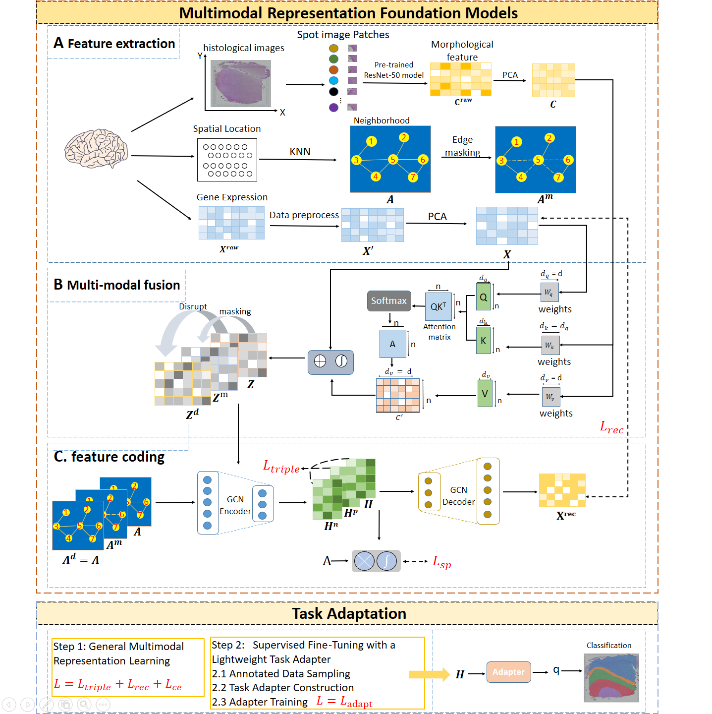

面向空间转录组学的空间域识别框架 —— 跨 9 个公共数据集构建通用基础模型， 非对称交叉注意力融合基因表达与组织形态，冻结骨干 + 1% 标注即达最优性能。
S1: 多数据集预训练
↓
S2: 冻结骨干 + 轻量适配器
空间转录组学为理解组织微环境提供了前所未有的视角
空间转录组学（ST）能够在保留组织空间位置信息的同时测量全转录组表达水平。 一个核心任务是空间域识别——将组织划分为具有不同转录特征和 空间连续性的功能区域，这对理解组织结构、疾病进展和微环境至关重要。
① 现有方法主要依赖无监督聚类，缺乏生物语义的可解释性。
② 多模态融合策略多为简单拼接或对称注意力，忽略了基因表达的主导地位。
③ 细粒度人工标注成本极高，小样本场景下端到端微调极易过拟合。
两阶段解耦学习：通用表示 → 下游适配

三项关键技术突破
首次在空间转录组领域引入跨数据集预训练范式，在 9 个不同平台、组织、 生物学背景的数据集上学习通用空间-分子表示。
基因表达作为 Query、组织学图像作为 Key/Value，利用生物学先验驱动的不对称模态融合， 避免简单拼接或对称注意力导致的信号稀释。
严格解耦预训练与下游适配：基础模型保持冻结，仅训练轻量 MLP 分类器。 避免灾难性遗忘与过拟合，1∼5% 标注即可接近全监督水平。
覆盖多种组织类型与检测平台
选择数据集、点击运行，查看空间域识别结果与基线对比
🚀 进入交互式 Demo